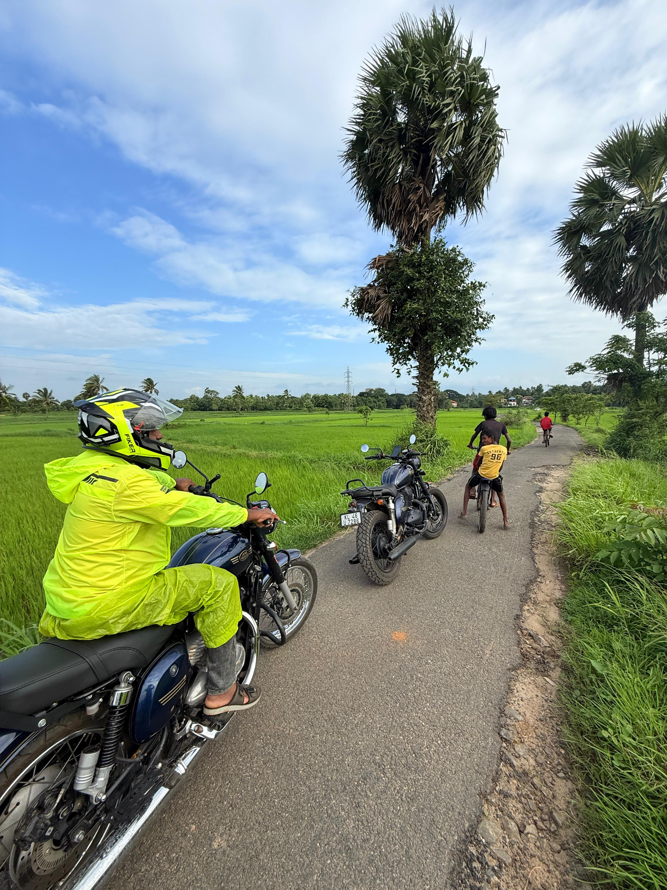
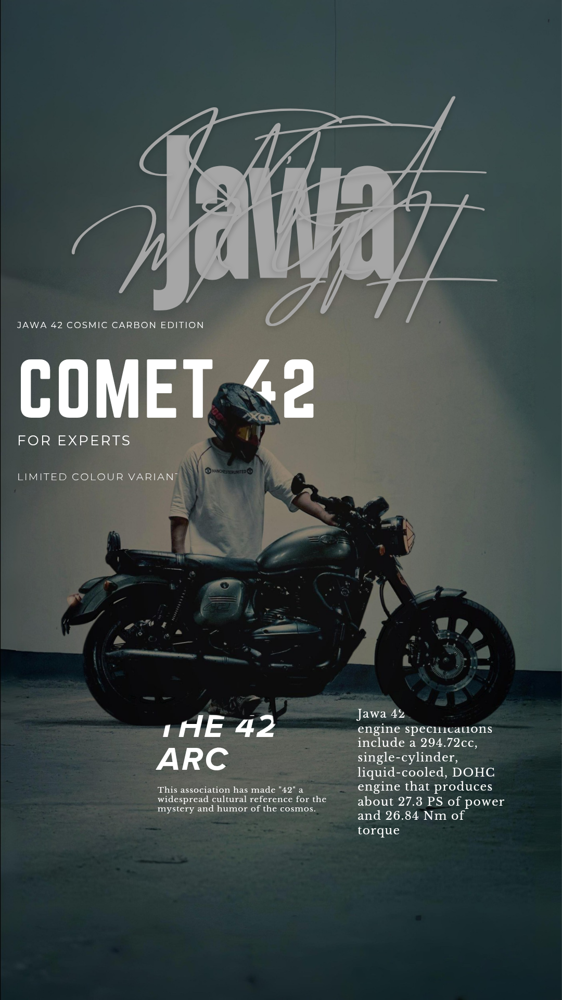
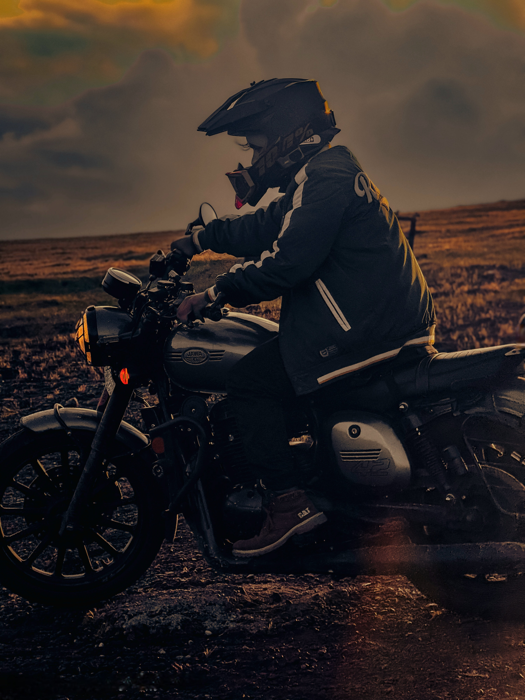

To unite every Jawa and Yezdi rider across Kerala under one brotherhood — fostering safe riding practices, organizing premium touring and off-road experiences, building deep community bonds, and representing the legendary heritage of Jawa and Yezdi motorcycles with pride and passion.
To be India's most respected and organised motorcycle brotherhood for Jawa and Yezdi riders — expanding beyond Kerala, preserving the legacy of these iconic motorcycles, and creating a generation of skilled, responsible, and passionate riders who represent the true spirit of adventure on every road.
From a small WhatsApp group to a statewide movement — here's how JRCK grew from a dream into a legend.

2019
A group of two passionate Jawa riders — Shahid from Kozhikode and Febin from Kannur — founded Jawa Riders Club Kerala. The first official meetup was held at Thrissur Round, in front of Vadakkunnathan Temple.
2020
Despite the pandemic, JRCK grew digitally — hosting online technical sessions, ride planning workshops, and growing the community to over 50 members across 5 districts.


2022
With the re-launch of Yezdi motorcycles, JRCK opened its doors to Yezdi riders, cementing the brotherhood's identity as the home for all classic-heritage motorcycle enthusiasts.
2023
JRCK crossed 100 active members with chapters in all 14 districts. The first charity ride for flood relief established JRCK as a community-first organisation.

2023–25
50+ organised rides, 4 major off-road championships, and Kerala's most iconic motorcycle brotherhood — JRCK's legend continues to grow with every ride.
2026 · Latest
A historic milestone for JRCK — officially recognised as part of the Jawa Yezdi Nomad Community. Strengthening our brotherhood across India, expanding touring culture, and proudly representing Kerala on the national riding map.
The code we live by on every road, at every turn, and through every challenge.
Safety is non-negotiable in JRCK. Every rider wears full gear, follows traffic rules, and looks out for their fellow members. We arrive together, we return together.
The first rule of JRCK rides — no rider is left behind. Whether mechanical trouble, fatigue, or a fall, the brotherhood stops for every member without question.
We respect every road, every community, and every person we encounter. JRCK riders are ambassadors of positive motorcycle culture across Kerala.
From bike maintenance to ride organization — we pursue excellence. JRCK sets the standard for what a motorcycle club should be, in every aspect of its operations.
Senior riders mentor newcomers. Technical knowledge is shared freely. Every member who joins JRCK becomes a better, more confident rider within months.
We are riders but we are also citizens. JRCK actively contributes to society through charity rides, blood donation camps, and disaster relief initiatives.
Joining JRCK is not just about being part of a club. It is about becoming part of a living, breathing brotherhood that shares your passion for machines, roads, and freedom.
Members-only touring events, off-road sessions, and night rides organized across Kerala throughout the year.
Free technical workshops, maintenance tips, and access to our network of trusted Jawa and Yezdi service partners.
Exclusive jerseys, badges, stickers and club gear available only to registered JRCK members.
500+ brothers and sisters across Kerala who will stop on any road at any time for a fellow JRCK member.